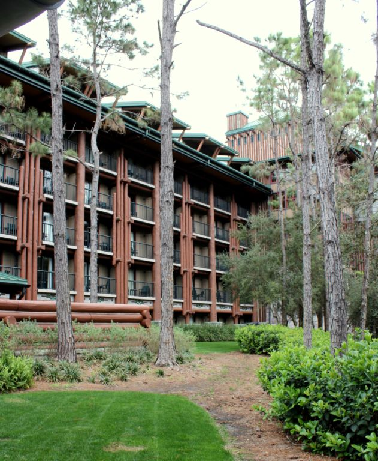
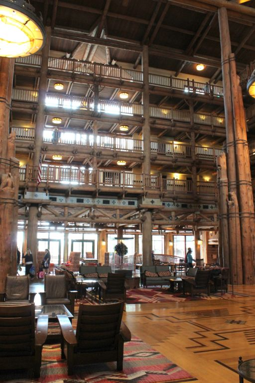

.png)
.PNG)
.PNG)
.PNG)
.PNG)
.PNG)
.JPG)
.JPG)
.PNG)
.PNG)


Where our family really likes to go for the food is the resorts. So on Saturday, after we made sure there was no way to get into Be Our Guest for lunch, we hopped on one of the Disney buses and made our way from the Magic Kingdom over to Wilderness Lodge.
I had never been in it before, so this was a fun little excursion for me. The lodge is designed to look like a National Park lodge in the Northwest at the turn of the century.
 It reminded me of the Ahwahnee, a lodge we visited in Yosemite National Park a few years ago.
It reminded me of the Ahwahnee, a lodge we visited in Yosemite National Park a few years ago.
Saturday was cloudy and cool in Orlando, so I was glad to see that fire burning in the fireplace. 🙂
Needless to say, that huge lobby with the towering logs and overscale furniture was quite impressive!
Water was even flowing in the interior!
One of the highest rated restaurants in all of Walt Disney World is Artist Point there in Wilderness Lodge.
Unfortunately, they do not serve lunch, but I did wander inside to get a photo of it for you. 🙂
We chose to dine at Whispering Canyon Cafe instead. It is a fun spot to enjoy what I call “cowboy food.”
(Just don’t ask for ketchup…They will bring you 12 bottles…truly. 🙁 )
I didn’t get good photos of everyone’s meal because we were hungry and ready to dig in, but I did get a shot of our daughter’s pulled pork sandwich with sweet potato fries…
And my barbecued rib plate. It was very meaty!
After lunch, we took the bus back to the Magic Kingdom, watched a couple of shows, and rode a few more rides. Then it was time for another meal. 🙂
Because this trip was to celebrate our son’s birthday, we had made reservations at Boma, one of the best restaurants in WDW. To get there, we caught a bus to Animal Kingdom Lodge.
And yes, there are really animals on the grounds around the lodge!
I had also never visited this lodge before, so this was another treat for me! Animal Kingdom lodge was designed to include elements of African architecture, and it houses one of the largest collections of African art in the United States.
Boma is an interesting restaurant designed to look like an African market.
The African inspired food is served buffet style (all you can eat) from multiple stations – a few carving stations with meats that have been cooked over an open fire, a vegetable station with a variety of African (and American) vegetables, a soup station (with some unusual flavored soups), a salad bar, a station with a choice of breads, and…
two dessert stations. 🙂
Everyone raves about the zebra domes, but they had a tiny coffee flavored tart in a chocolate shell that I could have eaten 20 of!
This was my dessert plate. The zebra domes are at the top, followed by a guava something. I am not sure what that next fruit dessert was, but it resembled an apple cobbler in flavor. Then you see those luscious coffee flavored tarts and finally 2 key lime cheesecake bites. (They were very rich!) And yes, I ate it all (even though I am not supposed to be eating any chocolate right now. 🙁 ) Sorry, it was a once in a lifetime opportunity.
Our sons really loved all the African foods – especially the soups. My husband loved the beef and mashed potatoes, and my daughter and I both thought the desserts were the best. Something for everyone, right? Have any of you dined at Boma? It was all tasty and a unique experience, but I think I enjoyed the food at Fulton’s Crab House from our recent Disney trip more. Probably because I am more of a riverboat girl than an African safari girl. 🙂
Would you believe I am still not finished sharing our Disney trip with you? We’ve looked at the Yacht Club, the Beach Club, Wilderness Lodge, and Animal Kingdom Lodge so far. Next time, we have some gorgeous gorgeous gardens to see!
I hope you will be back. 🙂


.PNG)
Catching up on all your Disney posts. The Wilderness Lodge would be the ticket for me. How fun. Disney World is just amazing, isn’t it? That food looked wonderful Kelly. Thank goodness Disney involves a lot of walking. It helps to work off the calories consumed! 🙂
——————————————————————–
You do walk off a lot of it, but not all – considering how much we ate! I loved seeing Wilderness Lodge, but I do think I like the beachy ones better – especially if you go in the spring and summer. If we made a winter trip though, I think Wilderness Lodge would be my choice then. The Polynesian is also wonderful, but they were doing a ton of construction on it when we were there, so we avoided it.
Kelly
Thanks for sharing your fun vacation! The Wilderness Lodge is also reminiscent of the Yellowstone Lodge.
Too bad you couldn’t eat at Artist Point. My husband and I went for our 20th anniversary in December. Artist Point was my favorite restaurant on that trip service and food-wise. The Smoky Portobello Mushroom Soup still sends me into reverie; they graciously provided me with the recipe. I also discovered black lava salt which topped the butter for the bread. (World Market sells it.)
We have also dined at California Grill 3 times; the food is always good, service is OK; always very busy.
We have never eaten at Boma but did enjoy the other one (Jika?) a few years ago.
——————————————————————–
I hope to get to dine at Artist Point on our next trip. What a great place to celebrate your anniversary! That soup sounds delicious, and I will have to look for the black lava salt the next time we are in World Market. Thanks for the suggestion. Our daughter dined with her boyfriend at Jiko on Sunday night. She had a lamb dish that she said was absolutely delicious.
Kelly
Have loved your Disney posts, including the food reviews. My family ate at Boma a couple of years ago, and loved it!! We were with our daughter’s family and had a meal plan, which made the evening meal there very affordable.
What fun that your daughter is having the opportunity to intern at Disney, and that your son flew in to join you for a birthday celebration!
————————————————————————-
It was a very fun weekend for sure! Glad you have also enjoyed Boma. It is always fun for everyone to taste and compare all the different foods.
Kelly
This looks like so much fun! Disney World is so much better than Disneyland! Wish it were closer!!
——————————————————————
Just catch a flight to Florida, and you can enjoy it too Cindy!
Kelly
I’ve never had a meal at WDW I didn’t love! Those desserts look scrumptious! 😉
———————————————————————-
I agree. I used to love the Crystal Palace, but my children all tell me that I would not like it now. I can’t imagine it not being good, and one day I am going to persuade them to give it a try with me.
Kelly
This IS fun!!! I’m so enjoying the vicarious vacation! And you’re hitting all the hotels that we haven’t visited. Had no idea they’d be so large and over-the-top in their decor. My guide books didn’t give them enough credit, because I can see from your photos that it’s worth a visit to WDW just to take a complete tour of all the hotels — nevermind the rides and shows! Wishing y’all a GREAT rest of your trip. Thanks for the “Calgon, take me away!”…
——————————————————————-
They are HUGE, and so are just the lobbies. You know Disney pays attention to all the details. A hotel tour is a very fun thing to do at Disney World. We have stayed at the Polynesian and the Boardwalk in the past. We have visited the Grand Floridian but not stayed there. For architecture and interior design lovers, you can’t beat all their resorts.
Kelly
My, my! My daughter has been holding out on me! She has been to these resorts, I’m sure but I haven’t!! So the next time she asks me where I want to go for Mother’s Day or my birthday, I will be ready to rattle this list off and she will wonder how I know about all of these!! Every place is so wonderful!! It would be hard to decide!! She took me to Bonnet Creek Resort when she was having a conference and I had never heard of that!! WDW is certainly a big, BIG World and to think we can enjoy all this and never have to leave the USA!! Or for me just stay in FLA!! Bring on more pictures!! This is FUN!
——————————————————————-
Whoa…she HAS been holding out on you Louvina. Shame on her! I hope she has taken you to some of the nicer dining spots in Epcot…such wonderful food there!
Kelly
Great post, Kelly! We love Artist’s Point–it is really beautiful at night. I’ve never been to AK Lodge, so I will have to add that to our list. I’m impressed with how much you fit into one weekend! It makes me want to go back already. 🙂
———————————————————————-
My husband and son have dined at Artist Point, and they are going to have to take me the next time we are there. 🙂 We really try to pack a lot in when we go…which was quite exhausting when you consider it was the weekend we lost an hour with the change to Daylight Savings time. 🙁
Kelly
I have wanted to go to the Wilderness Lodge for YEARS!!! Hopefully one day I will get there. I love African art! The food sounds great too. Thanks so much for taking us along on this journey with you!
———————————————————————
I had wanted to go for years, too, Pinky. Since we could not get reservations there, I knew it was going to have to be a visit for lunch…not a bad time to check it out. 🙂 I hope you get to visit it on your next trip.
Kelly
I’m loving all of your Disney posts — one of our favorite places to visit! Boma is one of our must-dos on every trip — I am dying for some Zebra Domes now — lol! We’ve never ventured over to Wilderness Lodge, though — now I am putting it on our next-time list. 🙂
——————————————————————–
I’m so glad you are enjoying the posts Jackie. Boma certainly has a wide variety of foods from which to choose. Those zebra domes were very good, but I will still prefer the coffee tarts over them. Definitely make a visit over to Wilderness Lodge next time. It is a short bus ride from the Magic Kingdom.
Kelly
Kelly,
I really must get to Disney World. Due to real estate constraints, our Disneyland in Anaheim doesn’t offer the scope of what you’ve shared. There are some really great restaurants on “Downtown Disney” which is outside of the gates of both theme parks [Disneyland and California Adventure].
Those desserts looked delicious and I would have cleaned my plate as well!
I’m still thinking about the incredible bathroom in that Yacht Club.
I love this tour, thanks for sharing.
xo,
Karen
——————————————————————–
Yes, you must Karen! And bring your grandkids. At least your Disney has claim to being the first. 🙂 I am glad to know I am not alone in the clean my dessert plate club. (That gelato was oh my goodness delicious!)
Kelly
Keep ’em coming, Kelly. It’s like a visit to WDW without leaving home. :-))
———————————————————————
Too funny! There are more coming. 🙂 Glad I could take you along.
Kelly